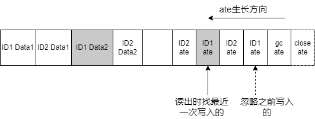
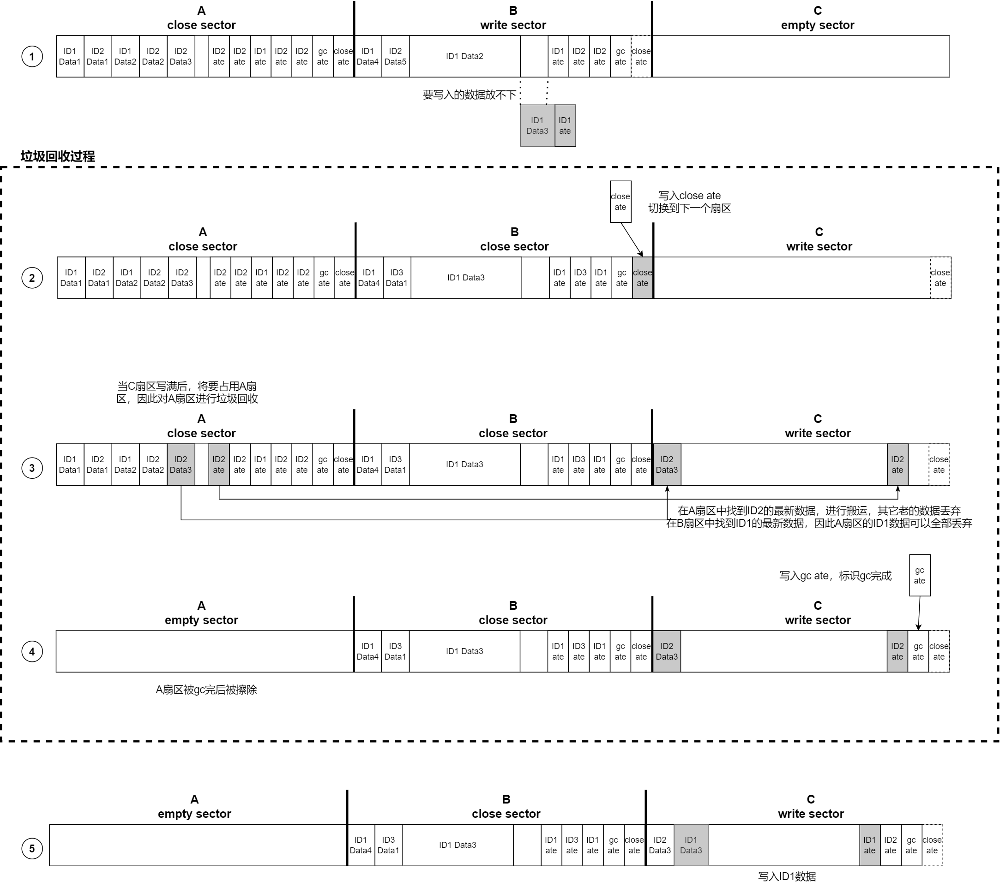

Zephyr NVS原理分析¶
基本概念¶
Zephyr NVS基于Flash之上提供一个简易的文件系统。其目标是利用Flash的特性，解决Flash在存储数据上的缺点。
Flash的特性：
有数据的位置，再次写入前必须先擦除
擦除总次数有限制
擦除单位为页
不同的Flash会有写入对齐要求
读出数据无限制
由Flash的特性导致的缺点：
无论写多少数据，都要先进行页擦除
擦除耗时，导致写入耗时
频繁的擦除会降低Flash的使用寿命
写入对齐对写入数据的位置和长度有限制
因此设计NVS的时候，主要是目标：
不是每次写入数据时都做擦除动作
降低擦除Flash的次数，增加Flash的寿命
屏蔽写入对齐的限制
NVS扇区¶
NVS以扇区sector进行管理：
一个NVS由2个或以上的扇区组成
一个扇区由Flash的1个或者多个页组成。
NVS和Flash的关系如下图：

由于扇区和Flash的页是对齐的，所以对扇区进行擦除动作时可以直接使用Flash擦除API，而无需额外的代码。
NVS记录¶
写入NVS的数据叫做NVS记录，写入时用ID标识记录，一个ID标识一条记录，ID的长度为16bit，因此NVS内的记录不会超过65536条。在NVS中一条记录被分为两部分
记录分配表 ate： Allocation Table Entry，用于记录数据的ID和数据在扇区中的信息。
记录的数据
在zephyr\subsys\fs\nvs\nvs_priv.h中定义ate的结构
struct nvs_ate {
uint16_t id; /* 数据的ID */
uint16_t offset; /* 数据在扇区内的偏移 */
uint16_t len; /* 数据的长度 */
uint8_t part; /* */
uint8_t crc8; /* crc8 check of the entry */
} __packed;
从ate的结构体可以看出NVS记录的数据长度用`uint16_t`记录，因此NVS一条记录的数据长度最多为64K。
当NVS写入一条记录时ate和其指向的数据在物理位置上是分开的，ate从扇区的最后向前生长，而数据从扇区的最前面向后生长。

特殊定义¶
基于NVS的设计，为了方便后续的说明，这里约定一些特殊定义：
ate相关¶
last ate
最近一次写入的ate
close ate
id=0xFFFFlen=0offset指向该扇区最后写入的ateclose ate固定位于扇区的最末尾，不指向任何数据，用于标识扇区已被关闭
gc ate
id=0xFFFFlen=0offset指向gc ate自己gc ate固定位于close ate前，不指向任何数据，用于标识该扇区的数据是被垃圾回收过的
delete ate
id为被删除数据的idlen=0offset=0delete ate用于标识某个id的数据被删除
扇区相关¶
open sector 不含有有效close ate的扇区
close sector 含有有效close ate的扇区
write sector 当前可写入的扇区
empty sector 被擦除后，内容为全FF的扇区
原理说明¶
NVS将扇区当作循环缓冲进行管理，写入记录被添加到扇区内，当一个扇区被写满后切换到下一个扇区。
写入¶
NVS写入记录时，不会擦除老的记录，而在最新的位置写入记录，ID的有效数据只是最新记录的这一条。这种写入时不擦除的操作大大的降低了对Flash的擦除次数。
常规写入¶
NVS写入记录时对write sector进行写入遵循下面步骤：
检查是否有相同记录：ID相同且数据相同，不需要再次写入
如果没有相同记录，写入新的记录
备注
判断相同的标准时ID和数据都相同，就算是查到有相同的ID，数据不同也需要写入

切换扇区¶
当写入数据时发现write sector的空闲空间无法容纳新的记录时，进行扇区切换，遵循下面步骤：
write sector剩余空间小于写入记录的data len+ate size，写入close ate
write sector切换为下一个sector，写入记录

NVS在写入ate和数据时，会参考Flash写入对齐的要求，分别对ate和数据进行对齐补齐。
读出¶
从写入分析可以知道，NVS中会存在多条相同的ID的记录，只需要找出最近一次与ID匹配的写入记录既可。下图示例要读出ID1的记录
删除¶
同样为了避免删除记录导致Flash擦除，删除时只是写入一个delete ate

次数如果再去读ID1的记录，会去找最近写入的ID1 的ate，也就是delete ate，表示ID1的记录已经从NVS内删除而读不到数据。
垃圾回收¶
由于对同ID的多次操作将导致NVS中含有大量的冗余数据
从写入机制可知：NVS内可能会存在多笔同ID的数据，但只有最后一笔有效。
从删除机制可知：即使ID的数据从NVS内删除，但任然占用Flash空间。
NVS引入了垃圾回收机制处理这些冗余：
NVS永远保留一个扇区为empty sector
当写NVS引发扇区切换时进行垃圾回收
一次垃圾回收只处理一个扇区
垃圾回收的扇区是即将要写入扇区的下一个扇区
一次写入引发的垃圾回收过程如下图，其中虚线框中的2，3，4是垃圾回收过程：
写入的ID1记录比扇区B的剩余空间大
将B扇区关闭，切换到C扇区
对A扇区进行垃圾回收 1. A扇区中ID2的数据为最新数据，搬运到C扇区 2. A扇区中的ID1在B扇区中有更新的数据，不需要搬运 3. 其它A扇区中的数据都是冗余数据，无需搬运
A扇区被回收完后将A扇区擦除，将C扇区标识为已完成垃圾回收
C扇区的数据可以容纳要写入ID1的数据，写入ID1最新的数据
当C扇区被写满后，下一次将对B扇区进行垃圾回收，然后擦除B扇区。这样循环往复。
从上面分析可以看到NVS的擦除是在其管理的扇区中循环进行的，这种机制可以均衡对Flash的磨损，从整体上延长Flash的寿命。垃圾回收付出的代价是要浪费一个扇区无法写数据，因此在创建NVS时需要评估写入单笔记录数据的最大长度，尽量配置小的扇区减少浪费。
NVS创建与恢复¶
NVS本身不存在创建格式化的问题，只要指定了NVS在Flash中的位置以及扇区大小和个数，NVS会按照初始化的信息进行操作。如果Flash中之前没有写过NVS，NVS会自己进行擦除操作。如果Flash之前有NVS，初始化的时候会通过下面步骤进行恢复：
遍历扇区，找到close sector之后的open sector，将其设置为write sector
如果全部是open sector，那么第一个扇区作为write sector
检查write sector之后是否为empty sector，如果不是 1. write sector如果无gc ate，擦除write sector，做gc 2. write sector如果有gc ate，擦除下一个sector
总结¶
Zephyr NVS代码实现相对复杂，通过本文可以理解Zephyr NVS的设计思想和工作原理，为分析Zephyr NVS打基础。Zephyr NVS对Flash进行封装，通过冗余扇区减轻Flash的两个缺点带来的影响：
写入/删除时只写不擦除，降低Flash磨损，增加Flash使用寿命。
垃圾回收时循环擦除，均衡Flash磨损，增加Flash整体寿命。
参考¶
https://docs.zephyrproject.org/latest/reference/storage/nvs/nvs.html